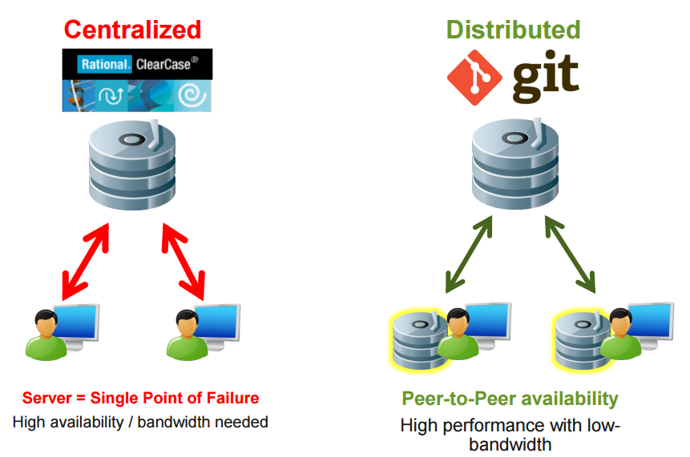
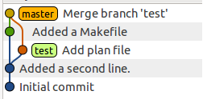
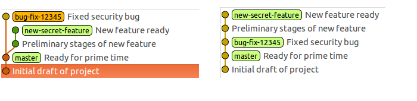

Getting Started With Git - 02/03/2015
Presenter Notes
Installation
- Click the Git.exe in your downloads folder
- Choose the default options. Apart from...

- Setup configuration with handout
Presenter Notes
Clearcase vs Git

Presenter Notes
Differences between the two
- Each Git clone is a replica of the central repository
- Git has no checkin command and checkout command is not what it means in Clearcase
- There are no view and no config specs
Presenter Notes
Cloning an Existing Repository
- Use
git clone [url]command to copy an existing Git repository from the server. - This is a one time operation.
Presenter Notes
Exercise - Clone down a repository
- Go to https://gerrit.ericsson.se - Ericsson's Git server
- In the top left click Projects -> List
- Type in
cm-sync-nodeand click on the 2nd project - Copy the git clone command
- In Git bash paste it in - you'll need to click on the border icon
- cd into project
Presenter Notes
Viewing Repository Status
git status
Use this to view the working tree status. This shows files that are in the following states:
- Modified
- Added
- Deleted
- Renamed
- Copied
- Untracked (not yet added to staging)
git status
Presenter Notes
The staging area
- What makes Git unique is its concept of a staging area
- The staging area is a temporary area to store your work before committing it
- It allows you to structure your commits in a way that suits you best
A commit lifecycle

Presenter Notes
Committing your changeset
git commit
Use git commit when you are happy with the changes to your files
git commit
Some useful commit options:
- -a | --all : Bypass the staging area process for files already under version control
- -m=<msg> | --message=<msg> : Specify your commit message
- --amend : Add the current changes in the staging area to the last commit in history
Tip: Commit often. It saves you from deleting work by mistake
Presenter Notes
Viewing the repository history
git log
Use git log to view the commits in a repository
git log
Some useful commit options:
- -<number> | -n <number> : Limit the number of commits to list
- --graph : A text based graph
- git log <file>... : Show commits that affected the specified file(s)
Presenter Notes
Exercise - Git Lifecycle
Run git status after each of these steps
- From the project you cloned, open up pom.xml in the editor of your choice
- Edit a few lines
- Add the file to the staging area
- Commit the file
- View your history
Presenter Notes
Viewing the changes to your tracked files
git diff
You will want to view the changes you have made before you commit
- View changes in your working directory
git diff
- View changes in your staging area
git diff --cached
Presenter Notes
Exercise - Viewing changes to your repo
- Make some changes to the file(s) in your repo
- Create a new file
- View the diff for your working directory and staging area
- Add the new file and the changes to your existing file(s) to your staging area
- View the diff of your working directoy and staging area
- Commit your changes
Note: During all of the above steps make lots of use of the git status command. It is very helpful for letting you know what is happening in your repo
Presenter Notes
Ignoring files via .gitignore
- The gitignore file allows you to tell git to ignore certain files and not list them in your status output
- This is useful when you are building artifacts in the working directory that you don't want to be commited
- Examples are:
- compiled files
- binary executables
- third party libraries
Presenter Notes
Reverting changes to the working directory
git checkout
Sometimes you realise that the changes you have made have made the code worse and you want to revert to the last committed version of the files
git checkout will discard all changes you have made to the file. This will not affect files in the staging area
git checkout -- <file>...
Presenter Notes
Reverting changes in the staging area
git reset
Remove the file(s) from the staging area but keep the changes in your working directory
git reset HEAD <file>...
Remove all files from the staging area and discard their changes completely
Danger: There is no coming back from this!
git reset HEAD --hard
Presenter Notes
Working on multiple features at once
git branch
- Branching allows you to will want to work on multiple seperate features at the same time
- Both can be worked on without affecting the other
- Branches are pointers to revisions

Presenter Notes
Creating a branch
git branch
git branch <branchname> [<start-point>]
- This will create a new branch
- You must supply a branch name
- If you do not supply a start point then the branch will be created at your current revision
Note: Creating a branch does not mean you are now on that branch automatically. It must be checked out
Presenter Notes
Going to a specific revision
git checkout
Use git checkout if you would like to go to a specific revision in your repositories history
You can checkout a branch
git checkout <branchname>
or specify a revision using it's sha1 commit key
git checkout <sha1>
Note: The sha1 key can be found by using the git log command. It's the long string of hex characters
Presenter Notes
Combining branches
git merge
- Use git merge to combine the code changes from two different branches
git checkout new-secret-feature
git merge bug-fix-12345

Presenter Notes
Deleting a branch
git branch
- When the changes on a branch have been merged back in, you will want to delete the branch pointer
git branch -d <branchname>
This will only work if the commits on this branch have been merged to another branch
The more terminal option is to use the -D option. This will delete the branch pointer even if this branch has not been merged
Danger: You will lose any commits on this branch that have not been merged
git branch -D <branchname>
Presenter Notes
git rebase
- git rebase allows you to move your branches on top of each other
- Makes for a tidier history when many branches are live at the same time
- No merge commits left in the history
- Outside the scope of this presentation

Presenter Notes
Exercise - Branching & Merging
- Create a new branch in your repository called branch1
- Check it out and commit some changes
- Create another new branch in your repository called branch2 - ensure you create it with a start point of master
- Check it out and commit some changes
- Merge the two branches
- Update your master (hint: merge master to the top most branch in your history)
- Delete your branches
Presenter Notes
Working with remote repositories
- So far we have looked at managing our code locally
- This allows you to change your code and be safe in the knowledge that you can revert your changes if needs be
- It gives you a history of the changes you made and commit messages letting you know why you made those changes (provided you write good commit messages!)
Presenter Notes
Working with remote repositories
- Another main benefit of version control is that it allows you to collaborate with others
- This is where remote repositories come in
- You and your co-workers can each clone a repository, work on it locally, commit your changes, and then contribute your changes back to the original repository
Presenter Notes
Cloning an Existing Repository
git clone
Create your own working copy of an existing repository
- Cloning over ssh
git clone <username>@<host>:/path/to/repo
- Cloning over http(s)
git clone https://<host>/path/to/repo
Presenter Notes
Exercise - Clone a repository from github
- Clone the Python requests repository from github here
- Find the url you need to clone it over http (bottom right of the page)
- Clone it to your machine
Presenter Notes
Pushing to a remote repository
- To push to a remote repository, you must first add an entry for the remote server
git remote add origin git@github.com:<username>/<reponame>.git
- You can then push your master branch to the remote server
git push -u origin master
Presenter Notes
Exercise - Push to your github repo
- In this exercise you will push your local repos commits to your empty github repo
- Add the github repo as your remote origin
- Push your local commits
Presenter Notes
Pulling Updates
git pull
- Before you attempt to push your changes, you should perform a pull to ensure there are no new commits on the remote server
- If there are, then you should incoperate them into your local repo (and merge) before pushing
git pull
Presenter Notes
Exercise - Collaboration on github
- Pair up with the person beside you
- Add the other person as a collaborator on your github project
- In the github UI: Your project -> Setting -> Collorators -> Add
- Clone their repository
- Make some changes and commit
- Push to their repository
- Once they've pushed to your repo, make some changes to your own local repository and commit
- Try to push to your remote repository (hint: it should fail)
- pull the new changes your partner has made
- Merge and push
Presenter Notes
Questions??